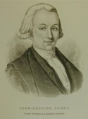

Beaubien-Perrault-Benington - Family Card
Beaubien-Perrault-Benington - Family Card
Jean-Claude Panet(1720 - 28 Feb 1778)Philippe Louis Francois Badelard(25 May 1728 - 7 Feb 1802)
M. Louise Barolet(30 Mar 1729 - 22 Jan 1803)Charlotte Guillimin(16 Sep 1718 - 26 Dec 1795)
m. 7 Oct 1779, Québec, Québec

b. 8 Jun 1751, Québec, Québec
d. 17 May 1815, Québec, Québec
br. 17 May 1815, Québec, Québec
occ. notaire, avocat, juge, seigneur
edu.
rel.
Flags. Beaubien
b. 11 Apr 1761, Québec, Québec
d. 18 Mar 1830, L’Ancienne Lorette, Québec
br. 26 Mar 1830, L’Ancienne Lorette, Québec
occ.
edu.
rel.
Flags. Beaubien
Children
Bernard Antoine Panet(26 Aug 1780 - 14 Jul 1854)
M. Louise Panet (2)(21 May 1782 - 28 Feb 1784)
M. Geneviève Panet(20 May 1783 - 19 Jan 1784)
M. Louise Panet (3)(17 Jun 1784 - 20 Dec 1795)
Manette Panet(15 Aug 1785 - 26 Nov 1787)
Charlotte Panet(4 Oct 1786 - 20 Jul 1787)
Charlotte Panet (2)(29 Oct 1787 - 19 Dec 1790)
M. (Manette) Panet(4 Nov 1788 - 14 Sep 1866)
> Hon. Philippe Panet(28 Feb 1791 - 15 Jan 1855)
Hon. Louis Panet(13 Mar 1794 - 15 May 1884)
Charles Panet(6 Oct 1797 - 5 Oct 1871)